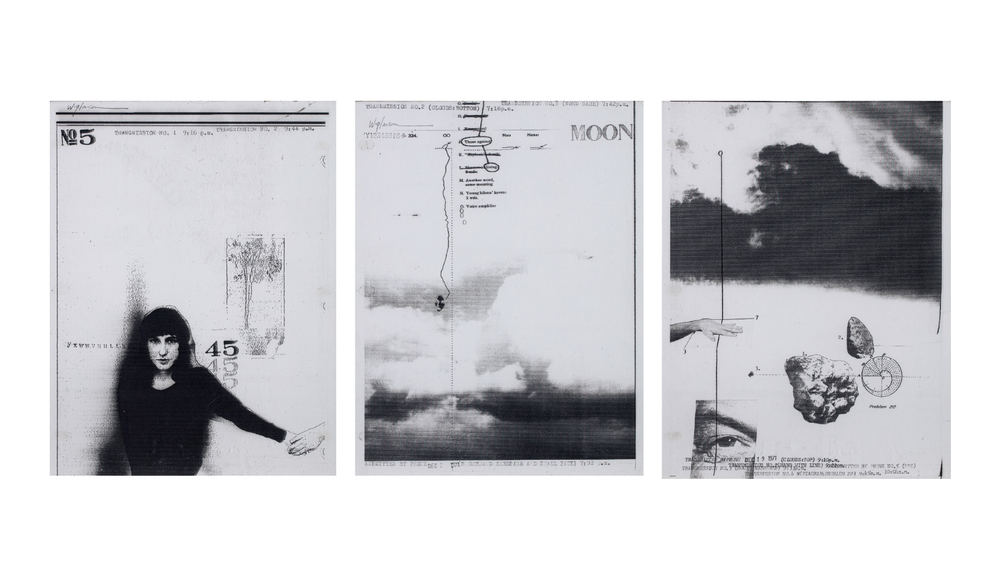
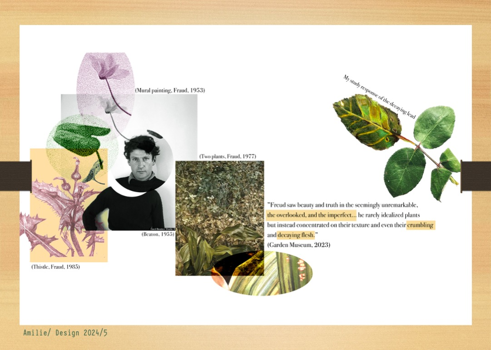
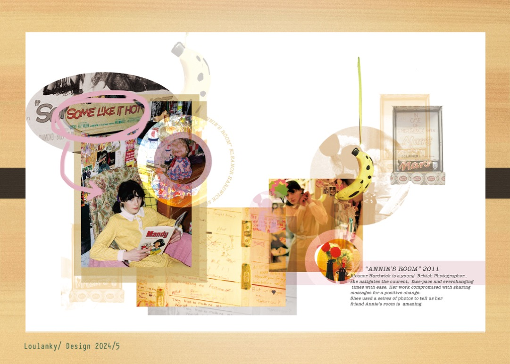

Pre-Project Artist Research
Example: William Larson

William Larson is an American photographer who has influenced the photographic world
FireFlies series 1971
Pre-project preparation
Research Requirements
- Research TWO artists to develop a research page
- Source quotes and use Harvard referencing
- Focus on artists that relate to your topic
- NAME/DATE/TITLE OF WORK
Student Examples

Student Example 1

Student Example 2

Student Example 3
Research Process
1
Identify Your Project Theme
- What is your project about?
2
Find Two Relevant Artists
- Find artists who work with similar subject matter
- Look for artists exploring similar concepts
- Search gallery websites, museum collections, and art books
3
Collect Information & Quotes
- Gather basic information about each artist
- Find meaningful quotes about or by the artists
- Download high-quality images of their work
- Note all source information for proper citations
Harvard Referencing Guide
Artwork Citation Format:
Surname, Initial. (Year) Title [Medium]
Examples:
- Larson, W. (1973) Transmuted By Picnic [Electro-carbon print]
- Kusama, Y. (2016) Infinity Mirrors [Installation]
- Sherman, C. (1981) Untitled #96 [Photograph]
Quote Citation Format:
"Quote text" (Surname, Year, p.X)
Examples:
- "My art originates from hallucinations only I can see." (Kusama, 2002, p.23)
- For online sources without page numbers, omit the page reference.
Research Requirements
Your research should include these key elements:
- Find two artists that relate to your project topic
- Collect key information about each artist
- Find meaningful quotes about their work
- Use Harvard referencing for all sources
Research Checklist
Found first artist relevant to my project
Found second artist relevant to my project
Collected quotes about or from the artists
Added Harvard references for all sources
Research Preparation
Complete your artist research
Be ready to discuss your findings in class
Due: Next class
×